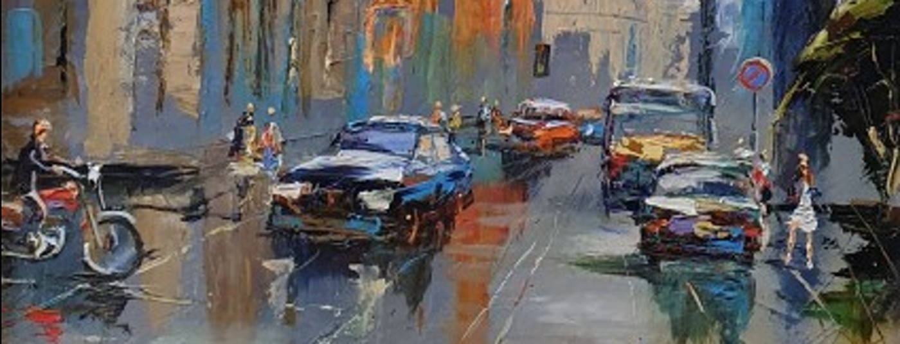
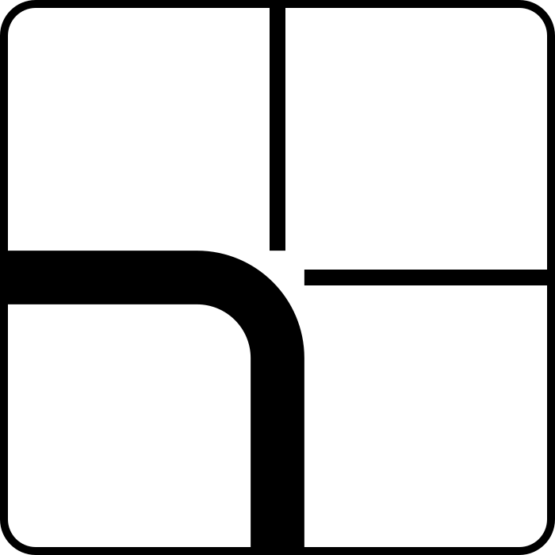
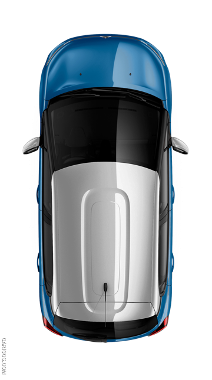
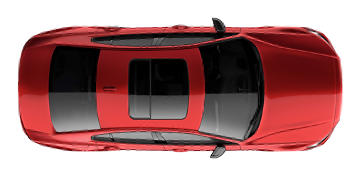
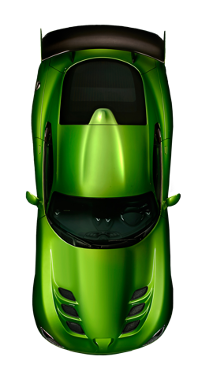
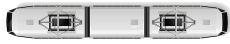
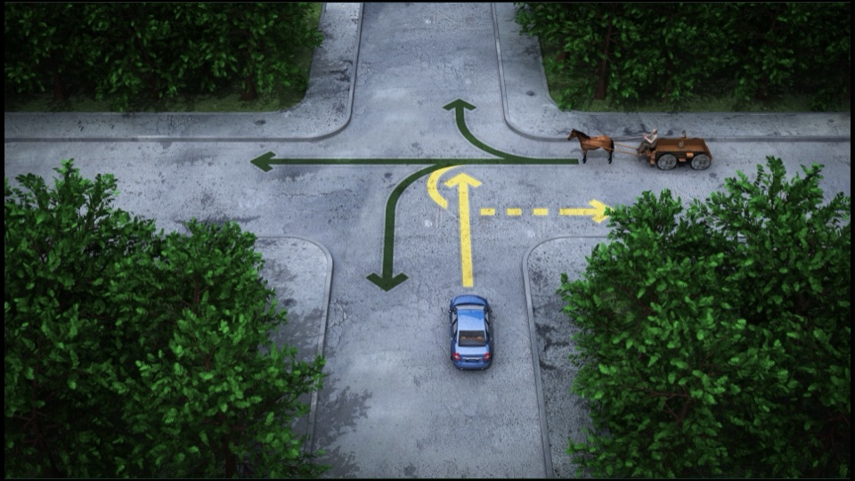
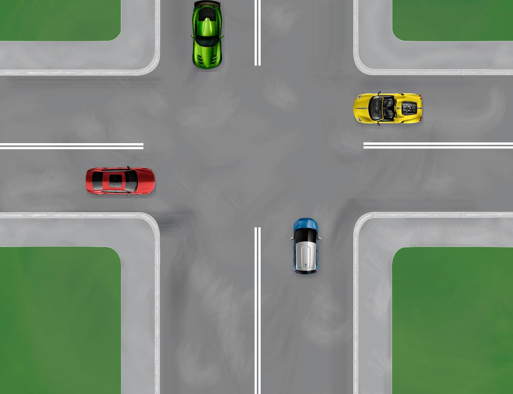

Мастер-класс
Замесы на перекрёстке
Вы подъезжаете к нерегулируемому перекрёстку. Одновременно с вами появляются ещё три машины: одна поворачивает, другая едет прямо, третья уже начала движение. За несколько секунд нужно понять, кто поедет первым — и что делать вам. Этот материал о том, как в такой момент не потерять правила и увидеть перекрёсток целиком.
Раздел 1
Почему в замесе теряются правила
В билете всё нарисовано: главная дорога, второстепенная, кто первый. В жизни картинка меняется каждую секунду.
Вы подъезжаете — и одновременно с вами на перекрёстке оказываются ещё три машины. Одна поворачивает, другая едет прямо, третья уже выехала. Все смотрят друг на друга: кто-то медлит, кто-то торопится.
В этот момент внимание сужается до одной машины. Человек перестаёт видеть весь перекрёсток, не понимает намерений остальных — и действует наугад. Иногда это заканчивается проездом не туда, иногда — страхом перед сложными перекрёстками, а иногда — обидным ДТП.
Задача — вернуть картинку целиком: увидеть всех участников, сравнить их права и выбраться из любой запутанной ситуации на перекрёстке.
Раздел 2
Назовите перекрёсток
Название перекрёстка — это уже половина решения! Назвать перекрёсток — значит определить, регулируемый он, равнозначный или неравнозначный.
1. Регулируемый или нерегулируемый?
Светофор или регулировщик. Очерёдность задаёт сигнал — знаки приоритета не работают.
2. Равнозначный или неравнозначный?
Правило правой руки: уступает тот, у кого угроза удара в правый борт.
3. Я на главной или на второстепенной?
Проезжаю перекрёсток первым по отношению к поперечной дороге — в любом направлении.
Уступаю тем, кто едет по главной дороге.
Не получается определить? Считаем себя на второстепенной дороге.
Переверните карточку
А что, если главная дорога меняет направление?

Нажмите, чтобы посмотреть ответ →
Определите, где вы находитесь: на главной дороге или на второстепенной.
Если на главной, найдите, кто ещё на главной. С ними разъезжаемся по правилу правой руки.
Они справа? Ждём!
Они не справа? Едем!
Если вы на второстепенной, сначала пропускаем всех, кто едет с главной. Далее разъезжаемся по помехе справа с теми, кто в равных с нами правах.
Нажмите, чтобы вернуться ↺
Раздел 3
Если права равны: правило правой руки
При одинаковых правах для движения и пересечении траекторий между безрельсовыми ТС уступает дорогу тот, у кого угроза удара в правый борт.
Уступаем встречным при повороте налево или развороте — это то же правило. Мы пересекаем траекторию встречного, и удар придётся нам в правый борт.
Эти схемы относятся к ситуациям, когда водители находятся в равных условиях: например, на равнозначном перекрёстке или на одной и той же дороге.

Вы


Поворот налево на равнозначном перекрёстке
На видео разбирается, как проезжать равнозначный перекрёсток при повороте налево: где пересекаются траектории, кому нужно уступить и как меняется ситуация, когда на перекрёстке оказывается несколько автомобилей.
Проверьте себя
Вы собираетесь сделать поворот налево. Справа никого, но на встречке едут машины. Можно ли выехать на перекрёсток?
Да. Выезжайте на центр перекрёстка и на ровных колёсах ждите, когда уедет встречка.
Раздел 4
Разворот в замесе
На мастер-классе все машины поедут на разворот. Разворот сложнее поворота: траектория пересекает встречный поток и всех, кто едет с поперечной дороги.
Не выезжайте на перекрёсток, если на нём образовался затор!
- Сначала определите приоритет: если вы на второстепенной дороге, уступите тем, кто едет по главной. При равных правах уступите транспортным средствам, приближающимся справа.
- Уступаем встречным на перекрёстке, а не перед ним. Выезжаем и ждём окно во встречном потоке.
- Встречка свободна — проверьте остальных участников с учётом приоритета дорог и помехи справа.
- Не режем угол. Корпус ставим так, чтобы выезд с перекрёстка был прямым: тогда видно пешеходов и свой ряд.
Если встречный тоже разворачивается, нужно решить, как вы разъезжаетесь: правыми бортами или объезжаете друг друга сзади. Оба автомобиля двигаются согласованно.
Раздел 5
Читать намерения
Правила дают опору, но этого недостаточно. Нужно уметь ориентироваться, читая намерения других участников движения.
Поворотник
Смотрим на поворотники других автомобилей: куда они будут двигаться? Не забываем, что авто
с левым поворотником может как повернуть налево, так и пойти на разворот.
Чтобы быть предсказуемым и безопасным водителем, заблаговременно включаем поворотник. Но так, чтобы не ввести других в заблуждение. Поворотник включён уже на перекрёстке — читается как намерение перестроиться, но не развернуться или повернуть налево.
Корпус и колёса
По положению машины видно, начался ли манёвр, по какой траектории она поедет.
Жесты
Можно показать рукой «проезжайте» — и договориться без слов. Так можно ускорить проезд
перекрёстка для всех участников. Жест не отменяет обязанность уступить и не гарантирует безопасность манёвра.

Взгляд
По взгляду других водителей можно понять, видят ли нас, предсказать их намерения
и дальнейшие действия.
Четыре автомобиля едут прямо на равнозначном перекрёстке. В ПДД нет прямого регламента на такой случай. Стандартное правило «помехи справа» здесь формально зацикливается — у каждого есть помеха справа. Очередность в такой ситуации водители определяют между собой по взаимной договорённости: жестами, визуальным контактом. Кто-то один должен отказаться от движения и явно показать это остальным.

Проверка
Три вопроса
Короткая проверка по правилам проезда нерегулируемых перекрёстков.
Перед выездом
Чек-лист
Девять проверок перед перекрёстком — и три варианта замеса, к которым стоит быть готовым.
Для равнозначного перекрёстка
Варианты замеса
- Тупиковая ситуация на равнозначном перекрёстке. Четыре машины с четырёх сторон: водители разъезжаются по взаимной договорённости.
- Одновременный разворот. Важно коммуницировать с водителями других ТС и разъезжаться аккуратно. Будьте готовы пропустить машины, которые изначально были слева, но оказались справа от вас во время разворота.
-
Многополосные дороги и интенсивное движение. Придётся долго ждать своей очереди,
высматривать окно для манёвра, действовать уверенно и осторожно.
Видео демонстрирует только плотность потока и поиск окна для манёвра; это не разбор проезда по российским ПДД.
Что будет на мастер-классе
- Восемь проездов через один и тот же перекрёсток.
- Четыре разные позиции — с разных сторон перекрёстка.
- Каждый манёвр — разворот.
- После каждого проезда — разбор: куда было направлено внимание, какие сигналы других водителей заметили, а какие пропустили.